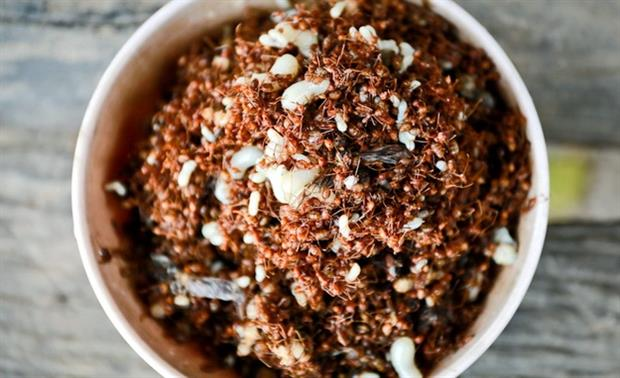

Những đặc sản Kon Tum nhất định phải thử một lần trong đời
Kon Tum không chỉ là vùng đất có cảnh quan thiên nhiên đẹp, hùng vĩ, cùng những nét văn hóa đặc sắc của các dân tộc thiểu số của Việt Nam, mà nơi đây còn có những món ăn ngon, lạ miệng. Nếu bạn có dịp du lịch đến Kon Tum, đừng bỏ qua những đặc sản Kon Tum được kể đến dưới đây nhé.
1. Bún đỏ cao nguyên
Đặc sản Kon Tum đầu tiên bạn không thể bỏ qua đó chính là bún đỏ cao nguyên. Nếu trước đây bạn thường ăn những món bún được chế biến cầu kỳ thì bún đỏ cao nguyên lại hoàn toàn ngược lại. Món ăn này có nguyên liệu vô cùng đơn giản gồm: cua đồng, chả viên và trứng cút luộc.
Tuy nguyên liệu làm món ăn khá đơn giản, nhưng bún đỏ cao nguyên vẫn phải cần đến những bí quyết của người dân bản địa để có thể cho ra món ăn trứ danh này. Bún đỏ cao nguyên có màu đỏ hấp dẫn của hạt điều, cà chua, xen vào đó là chút xanh của rau sống, màu trắng của trứng cút, màu nâu của chả cá. Tất cả làm nên một món ăn hấp dẫn du khách phương xa đến với mảnh đất này. Món ăn này thường được du khách lựa chọn ăn vào những buổi chiều se se lạnh.
2.Gỏi lá
Đúng như tên gọi của món ăn, món gói này sẽ có các nguyên liệu chính là các loại lá. Chỉ một món đặc sản Kon Tum này thôi mà trên mâm ăn sẽ bày đến 40- 50 loại lá. Các loại lá thường thấy trên mâm có thể kể đến như: lá cải, tía tô, đinh lăng, lá sung, lá mơ, rau húng,…
Để thưởng thức món ăn này, bạn cũng cần phải ăn có kiểu cách, không được ăn các loại lá một cách ngẫu nhiên, mà cần có quy trình đó nhé. Đầu tiên, bạn sẽ lấy lá cải hoặc mơ để làm lá cuốn. Sau đó, bạn chọn thêm những lá có vị chua và các lá khác tùy theo khẩu vị và cuốn thành hình cái phễu nhỏ. Bạn tiếp tục bỏ thịt ba chỉ, tôm và bì lợn,… vào chiếc phễu lá vừa tạo. Đừng quên cho vào đó chút tiêu, muối và một chút nước chấm. Mỗi lần ăn bạn có thể thử những loại lá khác nhau để có thể thử đủ mùi vị của món gỏi lá này nhé.
Rượu ghè
Du lịch Kon Tum với mục đích khám phá ẩm thực địa phương chắc chắn bạn không thể bỏ qua cơ hội thưởng thức rượu ghè. Đây là một thức uống rất đặc biệt của người dân tộc sống ở Kon Tum.
Nguyên liệu chính của món rượu ghè đó chính là gạo nếp hoặc sắn và một loại men đặc biệt được làm từ lá cây rừng. Những người bản địa ở đây cho rằng, rượu ghè có một hương vị rất riêng mà ít có thể thấy ở bất cứ loại rượu nào. Bởi nó được ủ từ rất nhiều loại rễ cây được người dân tìm trong rừng sâu. Chính loại men đặc biệt này đã khiến cho rượu ghè mang hương vị của rừng núi đại ngàn.
Ngày nay, rượu ghè được chế biển bởi nhiều loại men chợ. Tuy rằng vị ngọt cũng mang vị ngọt, nhưng hương vị đại ngàn không còn được như trước. Bởi để làm được hũ rượu ghè chất lượng, phải có đủ trên 20 loại lá và rễ cây rừng.
4. Heo măng đen quay
Heo Măng Đen tại Kon Tum còn có tên gọi khác là heo rẫy. Đây là loại heo được nuôi bằng thực ăn tự nhiên của rừng núi, nên thịt vô cùng thơm ngon và săn chắc. Con to nhất lúc trưởng thành của loài Măng Đen này cũng chưa nặng đến 20kg.
Trước khi cho lên quay, heo được làm sạch lông, mổ lấy nội tạng sạch sẽ. Sau đó, người dân sẽ tẩm ướp gia vị các loại gia vị đặc trưng của núi rừng vào con heo như: củ nén, ngò gai, gốc mùi, sả, ớt. Heo Măng Tây sẽ được giữ nguyên con để quay bằng lửa than cho đến khi da vàng giòn rụm và có mùi thơm. Đây cũng là một trong những đặc sản Kon Tum vô cùng nổi tiếng.
5.Cá chua
Đặc sản Kon Tum cá chua là một món ăn dự trữ của người dân nơi đây. Món ăn dân dã này được làm từ cá miệng – một loại cá gần giống với cá trôi sinh sống rất nhiều ở khu vực sông suối Tây Nguyên.
Đối với người dân Tây Nguyên, món cá chua là món ăn vô cùng độc đáo và dân dã. Điều đặc biệt là khi để càng lâu, thì món cá chua lại càng ngấm gia vị và càng đậm đà hơn. Chỉ trong một món ăn, bạn sẽ được thức vị mặn của muối, vị cay từ ớt rừng, vị ngọt dịu của lá bép. Bên cạnh đó chính là hương thính ngô thơm lừng sau khi món ăn lên men và có vị chua lạ miệng. Tất cả hương vị ấy đã tạo nên món cá chua đầy tự hào của người dân vùng cao.

6. Cá gỏi kiến vàng
Du lịch Kon Tum chắc chắn bạn không thể bỏ qua món cá gỏi Kiến Vàng vô cùng nổi tiếng của dân tộc Rơ Măm. Món đặc sản Kon Tum này nghe qua có vẻ hơi sợ, nhưng khi ăn một lần bạn sẽ cảm thấy muốn ăn thêm đó.
Món ăn này được làm từ những con cá suối cỡ vừa phải cùng với kiến vàng non. Nếu kiến còn cả trứng thì món ăn sẽ béo hơn rất nhiều. Sau khi được chế biến, món ăn này sẽ được ăn cùng với lá sung. Thử một miếng, bạn sẽ thấy được vị ngọt của cá suối, cùng với vị cay của kiến non. Thêm nữa món ăn còn đâm vị của tiêu, ớt thơm lừ khiến món ăn mang một hương vị rất riêng.

7. Dế chiên Kon Tum
Đặc sản Kon Tum tiếp theo được nhắc đến trong danh sách này đó chính là dế chiên. Món ăn này mang đến cho người thưởng thức vị thơm, bùi, đậm đà mà không hề ngấy đây nhé. Đây chắc chắn là món ăn xa lạ với người đồng bằng, những với những người dân tộc thiểu số, đây lại là món ăn rất quen thuộc.
Để đĩa dế chiên có chất lượng đạt chuẩn, vàng thơm thì công đoạn chế biến cần rất nhiều công đoạn. Dế được bắt về cần rửa sạch và để ráo nước. Sau đó, cho dế vào chảo dầu đang sôi để chiên. Tiếp đó, để tăng thêm hương vị, bạn cần cho thêm gia vị, ớt quả, lá chanh, sả thái nhỏ vào rang chung. Một lưu ý nhỏ là khi cho gia vị vào cần đảo nhanh để lá chanh không mất đi màu xanh. Như vậy là bạn đã có một đĩa dế ngon “nhức nách” rồi.
8. Cà đắng
Một món ăn đặc sản Kon Tum khác được rất nhiều gia đình dân tộc thiểu số trên đây sử dụng, đó chính là cà đắng. Loại cà này dễ trồng nên mọc rất nhiều ở những ngọn đồi, bờ suối. Quả cà đắng chỉ nhỏ như cà phá hoặc có quả sẽ thuôn dài to hơn đốt ngón tay một chút. Cà đắng có màu xanh sẫm và có sọc trắng dọc quả. Cà đắng được sử dụng để nấu với rất nhiều món ăn như kho với tôm tép, hay um với lươn, ếch.
0. Xôi măng
Món đặc sản Kon Tum này có vẻ quen thuộc với người dân đồng bằng hơn. Vẫn là món xôi được nấu từ gạo nếp quen thuộc ấy, nhưng với sự kết hợp khéo léo với măng rừng đã tạo thành món ăn sáng đặc trưng tại Kon Tum.
Xôi măng được chế biến khá đơn giản. Măng được sơ chế cho mất mùi và đem xào qua với gia vị cho đậm đà. Sau đó nấu xôi và bỏ măng lên là xong. Tuy chế biến đơn giản nhưng món ăn vẫn có mùi thêm đặc biệt khiến xôi măng dần trở thành thứ để níu chân du khách mỗi khi đến với Tây Nguyên.
10. Cá tầm nấu măng
Đến với cao nguyên Măng Đen, Kon Tum, bạn sẽ thấy rằng cá tầm và cá hồi ở đây sinh trưởng vô cùng nhiều, Nên đường nhiên nhiên đặc sản Kon Tum cá tầm nấu măng luôn được làm từ những chú cá tầm tươi mới được bắt lên.
Cá tầm được làm sạch, tẩm ướp với các cây dược liệu của núi rừng. Sau đó, cá sẽ mang đi nấu với măng le rừng chua ngon ngon. Món ăn thơm ngon này chắc chắn sẽ khiến bạn say đắm ẩm thực Kon Tum đó.

Hy vọng những thông tin vê đặc sản trên đây sẽ giúp bạn có thêm những gợi ý thú vị khi đến vùng đất du lịch này nhé.